|
Курсы
Регистрация
Методика
Оглавление
Для учащихся

Статьи
Инструменты
Контакты
|
Урок
4.
Статы игрока и игровые предметы
4.1.
Характеристики персонажа.
В большинстве случаев, целью любой браузерной ролевой игры - есть
развитие персонажа, что подразумевает получение опыта и распределение его в
характеристики героя. Участвуя в поединках, наш персонаж
становится либо более сильным, либо более ловким и т.д. Если герой планируется
как маг, значит совсем не лишним будет прокачать интеллект и т.д.
За эти характеристики, как Вы уже знаете отвечают соответствующие
поля в нашей таблице users:
Character_Strength INT DEFAULT 3,
/*сила персонажа*/
Character_Strength_Total INT DEFAULT 3,/*сила
персонажа c учетом вещей*/
Character_Endurance INT DEFAULT 3,
/*Выносливость (Здоровье=Выносливость*6)*/
Character_Accuracy INT DEFAULT 3,/*Точность
перса (влияет на крит.удар)*/
Character_Accuracy_Total INT DEFAULT 0,
/*Точность с уч. вещей перса*/
Character_Dexterity INT DEFAULT 3,
/*Ловкость перса (влияет на уворот)*/
Character_Dexterity_Total INT DEFAULT 0,
/*Ловкость перса с уч. вещей*/
Character_Sword INT DEFAULT 0,
/*Мастерство владения мечом*/
Character_Spear INT DEFAULT 0,
/*Мастерство владения копьем*/
Character_Axe INT DEFAULT 0,
/*Мастерство владения Топором*/
Character_Mace INT DEFAULT 0,
/*Мастерство владения Молот,Дубина*/
Character_Dagger INT DEFAULT 0,
/*Мастерство владения Ножом*/ |
Так, к примеру,
Character_Strength
- это сила нашего героя, которая после регистрации сразу
получает значение 3. Если же наш герой экипирован в какие-то доспехи и
использует оружие для поединка, то эти предметы также могут менять статы нашего
персонажа. Для этих целей предусмотрены поля
Character_Strength_Total,
Character_Dexterity_Total INT DEFAULT
и т.д.
Кроме того у нас есть поле в таблице
users - Character_UnUsed_Points ,
которое может содержать некоторое количество нераспределенных очков умений.
Давайте в качестве тренировки сделаем простую страничку для
распределения запасных очков в статы нашего персонажа. Мы создадим страничку
afterreg.phtml где сможем нажатием на
плюсики напротив соответствующих статов героя (сила, ловкость...) повышать их в
перделах доступных нам очков, хранящихся в поле
Character_UnUsed_Points
таблицы users.
Возьмем
за шаблон файл char.phtml и
немного его изменим. Так для распределения очков в характеристики, эта секция
кода на HTML примет вид:
<td width="252" height="1" valign="top"><font color="#000080">
Сила: <?php echo "$aStrength"; ?>
<?php
if
($aNotUsedStats > 0){echo
'<a href="afterreg.phtml?NickName='.$aNickName.'&setstat=Strength"><img
src="img/plus.gif" border=0></a>';} ?><br>
Выносливость: <?php
echo
"$aEndurance"; ?>
<?php
if
($aNotUsedStats > 0){echo
'<a href="afterreg.phtml?NickName='.$aNickName.'&setstat=Endurance"><img
src="img/plus.gif" border=0></a>';} ?><br>
Точность: <?php
echo
"$aAccuracy"; ?>
<?php
if
($aNotUsedStats > 0){echo
'<a href="afterreg.phtml?NickName='.$aNickName.'&setstat=Accuracy"><img
src="img/plus.gif" border=0></a>';} ?><br>
Ловкость: <?php
echo
"$aDexterity"; ?>
<?php
if
($aNotUsedStats > 0){echo
'<a href="afterreg.phtml?NickName='.$aNickName.'&setstat=Dexterity"><img
src="img/plus.gif" border=0></a>';} ?><br>
______________________<br>
Опыт: 0 <br>
Уровень: 0<br>
Побед: 0 <br>
Поражений: 0<br>
Ничьих: 0<br>
____________<br>
Статы: (<?php
echo
"$aNotUsedStats" ?>)<br>
<p>
</td> |
Вставочки кода на PHP в
HTML код решают такую задачу - если
переменная
$aNotUsedStats
отлична от нуля, значит отображаем красный плюсик напротив
соответствующей характеристики героя, для возможности увеличить эту
характеристику.
Вот как это будет выглядеть на страничке браузера:
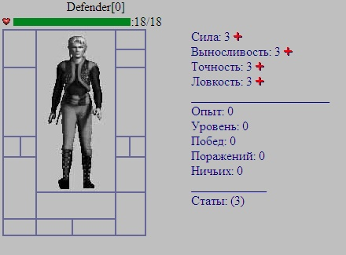
Нажав на плюсик, к примеру, напротив параметра Сила, мы передадим
нашему скрипту значение
&setstat=Strength,
что позволит нам увеличить эту характеристику. Для точности это будет
&setstat=Accuracy
и т.д.
Нам лишь остается анализировать в нашем
PHP коде какую из характеристик игрок
решил увеличить. Этот код будет выглядеть следующим образом:
// Меняем статы
if
(!empty($_GET['setstat']))
{
if
($aNotUsedStats > 0){
$aWhatStat = $_GET['setstat'];
switch
($aWhatStat){
case
"Strength":
{ $aStrength++; $aNotUsedStats--;
$query = "UPDATE
Users SET Character_Strength=$aStrength,Character_UnUsed_Points=$aNotUsedStats
WHERE Nick_Name='$aNickName'";
break;
}
case
"Endurance":
{ $aEndurance++; $aNotUsedStats--;
$query = "UPDATE
Users SET Character_Endurance=$aEndurance,Character_UnUsed_Points=$aNotUsedStats
WHERE Nick_Name='$aNickName'";
break;
}
case
"Accuracy":
{ $aAccuracy++; $aNotUsedStats--;
$query = "UPDATE
Users SET Character_Accuracy=$aAccuracy,Character_UnUsed_Points=$aNotUsedStats
WHERE Nick_Name='$aNickName'";
break;
}
case
"Dexterity":
{ $aDexterity++; $aNotUsedStats--;
$query = "UPDATE
Users SET Character_Dexterity=$aDexterity,Character_UnUsed_Points=$aNotUsedStats
WHERE Nick_Name='$aNickName'";
break;
}
}
$result =
mysql_query($query)
or
die("Query failed :
" .
mysql_error());
}
} |
Как Вы заметили SQL
запрос update увеличивает
соответствующий параметр нашего персонажа и уменьшает значение поля
Character_UnUsed_Points,
чтоб мы не смогли прокачать нашего героя до бесконечности!
Полный текст файла
afterreg.phtml Вы можете найти
здесь. Может понадобится и файл
char.phtml потому что мы
добавили там кнопку, ведущую на страницу распределения статов - его вы найдете
тут. Также используйте картинки из папок
img и
items.
4.2.
Зоны защиты и
поражения (тестовая игра).
Предметом
нашего второго пункта четвертого урока будет рассмотрение проведения боя,
который будет реализован только средствами HTML
и JavaScript на стороне клиента без
привлечения PHP и MySQL.
Если вы никогда не
играли в подобные онлайновые игры (типа Бойцовский клуб или
Carnage)
то поспешим Вам сообщить, что поединок в них проходит
примерно так - игроки обмениваются ударами в соответствующие зоны поражения и
одновременно прикрывают их - блокируют удары.
Таких зон поражения мы назначим
четыре: голова, корпус, пояс и ноги. Для упрощения сделаем
возможность блокировать сразу две зоны: голова-корпус, корпус-пояс, пояс-ноги,
ноги-голова.
На веб-страничке это будет
выглядеть так:
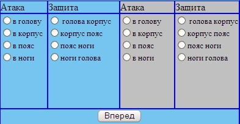
В реальной игре, которую мы с Вами разрабатываем конечно
будет невозможно управлять сразу своим персонажем и соперником, но в тестовых
целях - это вполне допустимо.
Мы добавим еще несколько характеристик наших
сражающихся героев и выведм их в рабочей области веб-странички:
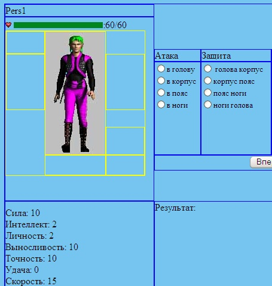
Кроме обычных ударов и блоков могут быть использованы увороты
и критические удары. Если параметр скорости одного героя (Speed)
выше, чем у другого, то он может вообще увернуться от удара, если же параметр
точности одного героя (Accuracy)
выше, чем у другого, то он способен нанести критический удар, от которого не
спасет даже блок (хотя половина мощности удара будет поглощена блоком)
Все эти параметры, как собственно формулы для расчета
параметров уворотов, антиуворотов, критов и антикритов задаются непосредственно
в JavaScript коде примерно так:
<SCRIPT>
//-- Статы персонажа 1
var Strength1 = 10;
var Intelligence1 = 2;
var Personality1 = 2;
var Endurance1 = 10;
var Accuracy1 = 10;
var Luck1 = 0;
var Speed1 = 15;
var uvorot1 = Speed1*2.5+Luck1;
var antiuvorot1 = Speed1*2+Luck1;
var krit1 = Accuracy1*1.5+Luck1;
var antikrit1 = Accuracy1*2.2+Luck1;
//-- Статы персонажа 2
var Strength2 = 10;
var Intelligence2 = 9;
var Personality2 = 5;
var Endurance2 = 15;
var Accuracy2 = 15;
var Luck2 = 0;
var Speed2 = 10;
var uvorot2 = Speed2*2.5+Luck2;
var antiuvorot2 = Speed2*2+Luck2;
var krit2 = Accuracy2*1.5+Luck2;
var antikrit2 = Accuracy2*2.2+Luck2;
var s_attack1, s_attack2, s_defend1, s_defend2;
</SCRIPT> |
Для выбора удара и блока будем использовать обычные
HTML radio-кнопки:
Атака
<p><font size="2"><input type="radio"
id=A11 name="attack1" value="1" onclick="setattack1(1)">в
голову<br>
<input type="radio"
id=A12 name="attack1" value="2" onclick="setattack1(2)">в
корпус<br>
<input type="radio"
id=A13 name="attack1" value="3" onclick="setattack1(3)">в
пояс<br>
<input type="radio"
id=A14 name="attack1" value="4" onclick="setattack1(4)">в
ноги<br>
</font>
</p>
Защита
<input type="radio"
id=D11 name="defend1" value="1" onclick="setdefend1(1)">
голова корпус<br>
<input type="radio"
id=D12 name="defend1" value="2" onclick="setdefend1(2)">корпус
пояс<br>
<input type="radio"
id=D13 name="defend1" value="3" onclick="setdefend1(3)">пояс
ноги<br>
<input type="radio"
id=D14 name="defend1" value="4" onclick="setdefend1(4)">ноги
голова</font>
<p>
|
Когда мы выбираем зону атаки и зоны блока, мы нажимаем мышкой на соответствующие
radio-кнопки при этом возникает
определенное в их описании событие onClick. Для
атаки после этого вызывается функция
setattack1, для
защиты -
setdefend1, в
качестве аргумента которых используется номер зоны поражения/защиты. Для
управления вторым игроком это будет соответственно функции
setattack2 и
setdefend2.
Увороты и Критические удары рассчитываются по математическим
формулам с применением случайных величин.
К примеру если была атака первым игроков второго игрока
в зону 4 (ноги), а он заблокировал зоны 3 и 4 (пояс и ноги) - то он отобьет
удар, если заблокировал что-то другое - пропустит удар:
if (s_attack1==4){
if((s_defend2==3) || (s_defend2==4)){
document.all("mes").innerHTML="Pers2
заблокировал удар в ноги<BR>";
lHit1=false;
}else{
document.all("mes").innerHTML="Pers2
пропустил удар в ноги -"+povreduha+"<BR>";
lHit1=true;
}
} |
При попадании
удара показывается повреждения, которые рассчитываются исходя из параметра силы
персонажа:
var maxblow = Math.round((Strength1-1)/3)+3; /* максимальный удар
*/
var minblow = Math.round(maxblow/2);
/* минимальный удар */
povreduha = getRandom(minblow,maxblow);
/* что-то из диапазона */
tkHP2 = tkHP2 - povreduha;
/* понизим уровень жизни */ |
Бой идет до
победы одного из героев. Вы можете варьировать переменными отвечающими за
характеристики героев, чтоб потестировать игру.
Запустите эту страничку для тестовой игры -
тестовый бой.
4.3.
Справочник предметов.
Чтоб говорить о предметах, которые может использовать
персонаж для ведения поединка с другими персонажами более предметно, нам
понадобится таблица в базе данных MySQL,
в которой мы сможем хранить описания этих предметов и непосредственно предметы,
принадлежащие своим владельцам. По сути, нам понадобится справочник предметов и
таблица предметов. Кроме того еще можно создать вспомогательный справочник,
который будет описывать места хранения предмета (непосредственно в слотах
персонажа, в рюкзаке, в магазине и т.д.)
Давайте начнем со справочника предметов. Тут должны
храниться только описания предметов и их характеристики. Вот он и назовем
мы его Items_List:
/* Справочник типов предметов и их свойств */
CREATE TABLE `Items_List` (
`IL_ID` INT(4) unsigned NOT NULL AUTO_INCREMENT, /*идентификатор
предмета*/
`ItemType` INT DEFAULT 0, /*Тип предмета : напр. 1 = меч, 2-топор....*/
`ItemNo` INT DEFAULT 1, /*Номер предмета внутри типа : напр. 1-меч
новичка,8-меч урагана....*/
`ItemName` CHAR(50) NOT NULL, /*Название предмета*/
`ItemSlotName` CHAR(15) NOT NULL DEFAULT '', /*Слот предмета*/
`Item_StateCost` INT DEFAULT 0, /*гос цена предмета*/
`Item_Image` CHAR(32), /*путь к картинке предмета и ее имя*/
`Item_Weight` INT DEFAULT 1, /*вес предмета*/
`Item_FullLife` INT DEFAULT 0, /*Долговечность предмета напр. 0/50*/
`Item_Strength` INT DEFAULT 0, /*требования к силе перса*/
`Item_Intelligence` INT DEFAULT 0, /*требования к интеллекту перса*/
`Item_Endurance` INT DEFAULT 0, /*требования к выносливости перса*/
`Item_Accuracy` INT DEFAULT 0, /*требования к точность перса*/
`Item_Dexterity` INT DEFAULT 0, /*требования к ловкости перса*/
`Item_Sword` INT DEFAULT 0, /*требования к владению мечом перса*/
`Item_Spear` INT DEFAULT 0, /*требования к владению копьем перса*/
`Item_Axe` INT DEFAULT 0, /*требования к владению топором перса*/
`Item_Club` INT DEFAULT 0, /*требования к владению булавой,дубиной
перса*/
`Item_Dagger` INT DEFAULT 0, /*требования к владению ножом перса*/
`Item_Level` INT DEFAULT 0, /*требования к уровню перса*/
`Item_Fire` INT DEFAULT 0, /*требования к владению магией огня перса*/
`Item_Air` INT DEFAULT 0, /*требования к владению магией воздуха перса*/
`Item_Water` INT DEFAULT 0, /*требования к владению магией воды перса*/
`Item_Earth` INT DEFAULT 0, /*требования к владению магией земли перса*/
`ManaCost` INT DEFAULT 0, /*сколько забирает маны, для свитков*/
`Min_Damage` INT DEFAULT 0, /*минимальное повреждение предметом*/
`Max_Damage` INT DEFAULT 0, /*максимальное повреждение предметом*/
`MF_Deviation` INT DEFAULT 0, /*модификатор уклонения*/
`MF_UnDeviation` INT DEFAULT 0, /*модификатор антиуклонения*/
`MF_ShokingBlow` INT DEFAULT 0, /*модификатор критического удара*/
`MF_UnShokingBlow` INT DEFAULT 0, /*модификатор антикритической защиты*/
PRIMARY KEY (`IL_ID`),
KEY(`ItemType`)
) TYPE=MyISAM; |
Таблица выглядит достаточно громоздко, и мы, со временем, добавим
туда еще несколько полей. Напротив каждого поля идет
комментарий, так что, думается у Вас не возникло затруднений в определении
смысловой нагрузки каждого из этих полей.
Как Вы заметили, предметы делятся по типам
`ItemType` (меч,
топор, нож, броня, шлем и т.д.) и внутри типов они еще подразделяются по
номерам
`ItemNo` (меч
новичка, меч ветерана, меч хаоса и т.д.) и так - практически для всех
предметов в игре. У предметов есть название (`ItemName`)
, картинка для отображения их в игре (`Item_Image`),
слот, куда это предмет может быть одет (`ItemSlotName`)
и т.д.
Кроме этого, чтоб воспользоваться тем или иным предметом,
персонаж должен удовлетворять некоторым условиям. К примеру, чтоб взять в руки
Меч Хаоса, у персонажа должна быть сила 10 и уровень 5 (
`Item_Level` = 5, `Item_Strength` = 10).
Еще возможно предъявить требования к мастерству владения тем или иным предметом
(`Item_Sword`,
`Item_Spear`...). Если
предмет обладает какими-то магическими возможностями, то вполне может для его
использования предъявлять требования по какой-ни будь магии стихий (`Item_Fire`,
`Item_Water`... ).
Если это предмет нападения, то для него должны быть
указаны значения минимального и максимального урона (`Min_Damage`,
`Max_Damage` ) и т.д.
Выполните его в EMS MySQL
Manager для создания таблицы
Items_List
Теперь нам остается добавить в пустой справочник несколько
наименований предметов. Вот эти наименования:
/*Добавим несколько описаний предметов в справочник*/
INSERT INTO Items_List (IL_ID,ItemType,ItemNo,ItemName,Item_StateCost,Item_Image,
ItemSlotName,Item_Level,Item_FullLife)
VALUES(1,1,1,'Молот Новичка',20,'mace.jpg','Weapon',1,20);
INSERT INTO Items_List (IL_ID,ItemType,ItemNo,ItemName,Item_StateCost,Item_Image,
ItemSlotName,Item_Level,Item_FullLife) VALUES(2,2,1,'Щит
Пророчества',25,'shield.jpg','Shield',1,30);
INSERT INTO Items_List (IL_ID,ItemType,ItemNo,ItemName,Item_StateCost,Item_Image,
ItemSlotName,Item_Level,Item_FullLife)
VALUES(3,3,1,'Шлем Рыцаря',20,'helmet.jpg','Helmet',1,30);
INSERT INTO Items_List (IL_ID,ItemType,ItemNo,ItemName,Item_StateCost,Item_Image,
ItemSlotName,Item_Level,Item_FullLife)
VALUES(4,3,2,'Шлем Всадника',15,'helmet1.jpg','Helmet',1,30);
INSERT INTO Items_List(IL_ID,ItemType,ItemNo,ItemName,Item_StateCost,Item_Image,
ItemSlotName,Item_Level,Item_FullLife)
VALUES(5,4,1,'Перчатки кузнеца',15,'gloves.jpg','Gloves',1,20);
INSERT INTO Items_List (IL_ID,ItemType,ItemNo,ItemName,Item_StateCost,Item_Image,
ItemSlotName,Item_Level,Item_FullLife)
VALUES(6,5,1,'Серьги обновления',22,'earrings.jpg','Ear',1,30);
INSERT INTO Items_List (IL_ID,ItemType,ItemNo,ItemName,Item_StateCost,Item_Image,
ItemSlotName,Item_Level,Item_FullLife)
VALUES(7,6,1,'Кулон знахаря',26,'necklace.jpg','Necklace',1,40);
INSERT INTO Items_List (IL_ID,ItemType,ItemNo,ItemName,Item_StateCost,Item_Image,
ItemSlotName,Item_Level,Item_FullLife)
VALUES(8,7,1,'Болотные Сапоги',10,'boots.jpg','Shoes',1,40);
INSERT INTO Items_List (IL_ID,ItemType,ItemNo,ItemName,Item_StateCost,Item_Image,
ItemSlotName,Item_Level,Item_FullLife)
VALUES(9,8,1,'Пояс отваги',10,'belt.jpg','Belt',2,20);
INSERT INTO Items_List (IL_ID,ItemType,ItemNo,ItemName,Item_StateCost,Item_Image,
ItemSlotName,Item_Level,Item_FullLife)
VALUES(10,9,1,'Кольцо повелевания',15,'ring1.jpg','Ring',2,30);
INSERT INTO Items_List (IL_ID,ItemType,ItemNo,ItemName,Item_StateCost,Item_Image,
ItemSlotName,Item_Level,Item_FullLife)
VALUES(11,9,2,'Кольцо Разрушения',24,'ring2.jpg','Ring',1,40);
INSERT INTO Items_List (IL_ID,ItemType,ItemNo,ItemName,Item_StateCost,Item_Image,
ItemSlotName,Item_Level,Item_FullLife)
VALUES(12,10,1,'Рубашка',5,'skirt.jpg','Armor',1,20);
INSERT INTO Items_List (IL_ID,ItemType,ItemNo,ItemName,Item_StateCost,Item_Image,
ItemSlotName,Item_Level,Item_FullLife)
VALUES(13,10,2,'Рубашка воина',14,'skirt1.jpg','Armor',1,30);
) TYPE=MyISAM; |
Наш с вами sql-скрипт
дополненный таблицей справочника предметов можете увидеть
тут.
Вот
несколько изображений предметов из этого справочника, которые мы будем
использовать в нашей игре:
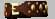
Пояс отваги |
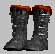
Болотные Сапоги
|
Шлем Всадника
|

Щит Пророчества |

Рубашка воина |
4.4.
Таблица
предметов
Сейчас нам остается создать реальные предметы на основе
справочника и дать их какому-либо из игроков, зарегистрировавшихся в клубе. Но
для этого нам нужна таблица, где будут хранится предметы, связанные с
непосредственным своим владельцем.
Создадим такую таблицу, которую назовем Items:
/*
таблица всех предметов в КЛУБЕ */
CREATE TABLE `Items`(
`IT_ID` BIGINT(20) unsigned NOT NULL auto_increment, /*уник.
идентификатор предмета*/
`IL_ID` INT(4) unsigned NOT NULL, /* ID предмета в справочнике
предметов*/
`Item_ComissionCost` FLOAT DEFAULT 0, /*комиссионная стоимость (если не
0 - предмет сдан для продажи)*/
`Item_Owner` BIGINT(20) DEFAULT 0 NOT NULL, /*владелец предмета (ID
игрока или номер системного объекта)*/
`Item_Position` INT REFERENCES ItemPosition_List(`ID`), /*позиция
предмета*/
`Item_CurrentLife` INT DEFAULT 0, /*Износ предмета*/
PRIMARY KEY (`IT_ID`),
KEY (`Item_Owner`)
) TYPE=MyISAM; |
Таблица
Items связана со
справочной таблицей
Items_List через поле
IL_ID
, которое присутствует в обеих
таблицах. Поле
Item_Owner
- отвечает за владельца этого предмета. Например если оно содержит значение 1,
значит этот предмет принадлежит первому зарегистрировшемуся персонажу в нашем
клубе. Поле
Item_CurrentLife
- содержит значение текущего износа
предмета. То есть предмет для которого износ прописан как 12/50 означает что у
него
Item_CurrentLife
= 12, а
Item_FullLife
= 50. Второй параметр мы взяли
из справочника предметов. Параметром
Item_ComissionCost - мы
воспользуемся позднее, когда создадим магазин комиссионных товаров на
Центральной Площади нашего игрового города.
Что касается поля
Item_Position
, то оно показывает в каком месте
находится данный предмет.
Для наглядности мы создадим справочник мест нахождения
предмета и он у нас будет носить простое название ItemPosition_List,
заодно сразу добавим туда несколько записей:
/* Справочник позиций предмета */
CREATE Table `ItemPosition_List`(
`IP_ID` INT(4) unsigned NOT NULL AUTO_INCREMENT, /*идентификатор
позиции*/
`ItemPosName` CHAR(30), /*Название позиции*/
PRIMARY KEY (`IP_ID`)
) TYPE=MyISAM;
INSERT INTO ItemPosition_List (ItemPosName) VALUES('Полка
комиссионного магазина'); --1
INSERT INTO ItemPosition_List (ItemPosName) VALUES('Рюкзак
игрока'); --2
INSERT INTO ItemPosition_List (ItemPosName) VALUES('Слот
игрока'); --3
INSERT INTO ItemPosition_List (ItemPosName) VALUES('Предмет
выброшен'); --4
INSERT INTO ItemPosition_List (ItemPosName) VALUES('Предмет
полностью пришел в негодность'); --5
; |
На текущий момент, любой предмет может находится в одной из следующих позиций,
которые указаны в таблице
ItemPosition_List.
Теперь давайте добавим несколько предметов для нашего
самого первого игрока с логином "Создатель".
INSERT INTO Items (IT_ID,IL_ID,Item_Owner,Item_Position,Item_CurrentLife)
VALUES(1,9,1,2,0);
INSERT INTO Items (IT_ID,IL_ID,Item_Owner,Item_Position,Item_CurrentLife)
VALUES(2,10,1,2,12);
INSERT INTO Items (IT_ID,IL_ID,Item_Owner,Item_Position,Item_CurrentLife)
VALUES(3,3,1,2,15); |
Что
за предметы мы добавили в таблицу
Items, мы можем судить
по полю
IL_ID,
которое у нас также имеется в справочнике предметов. Из него мы узнаем что
добавленные персонажу
"Создатель" предметы это - "Пояс
отваги","Кольцо
повелевания" и "Шлем
Рыцаря".
Вот они:
Пояс отваги |
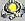
Кольцо повелевания |
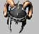
Шлем рыцаря |
Судя
по значению поля
Item_Position
все предметы были добавлены в рюкзак
нашего героя. (Item_Position =
2)
Добавленные таблицы вы сможете найти здесь.
4.5.
Влияние
предметов на параметры героя.
Какими свойствами наделить предметы в игре - это
целиком задача Вашего творческого мышления и фантазии. Обычно разработчики
онлайновых игр подготавливают по нескольку предметов одного типа для разных
уровней развития персонажа. Так например для второго уровня нашего героя (Character_Level
= 2) можно сделать несколько мечей, например таких:
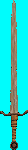
Сила 4
Ловкость 5
Точность 3
Выносливость 3
Урон 3-5
Мф. уворот +5 |
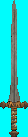
Сила 3
Ловкость 3
Точность 6
Выносливость 3
Урон 4-5
Мф. крит +10 |
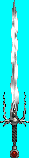
Сила 3
Ловкость 3
Точность 5
Выносливость 4
Урон 3-5
Мф. крит +5 |
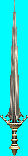
Сила 6
Ловкость 3
Точность 3
Выносливость 3
Урон 4-7
|
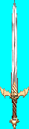
Сила 4
Ловкость 3
Точность 4
Выносливость 3
Урон 3-6 |

Сила 3
Ловкость 6
Точность 3
Выносливость 3
Урон 3-5
Мф. уворот +10 |
Как
Вы заметили эти мечи предъявляют разные требования к статам нашего персонажа (
для одного нужно больше ловкости, для другого больше силы) и соответственно
различаются в модификаторах, которые имеют и уроне, который наносят.
Таким образом игрок может планировать - какие статы поднимать, чтоб
можно было использовать то или иное оружие на том или ином уровне. На жаргоне
онлайн игр это означает - качаться под какую-то вещь.
Некоторые вещи, к примеру, могут сами добавлять статы:
Например:
 Броня Ангелов
Броня Ангелов
Сила 15
Ловкость 25
Точность 10
Выносливость 20
Действует на:
Ловкость +4
Мф. уворот +20 |
Меч Вихря
Сила 15
Ловкость 29
Точность 10
Выносливость 20
Урон 20-25
Мф. уворот +50 |
Если
у нас есть необходимость владеть предметом "Меч Вихря", но у нас развит
параметр ловкость только на 25, а для его использования нужна ловкость 29. Для
решения этой проблемы можно воспользоваться Броней ангелов, которая добавляет к
ловкости +4 единицы.
Вы можете сами придумать различные комбинации параметров
предметов для разных уровней.
В следующем уроке мы подробно рассмотрим создание инвентаря. По сути -
это будет рюкзак героя. В ходе урока мы научимся переносить предметы из рюкзака
в слоты персонажа и обратно.
|
|